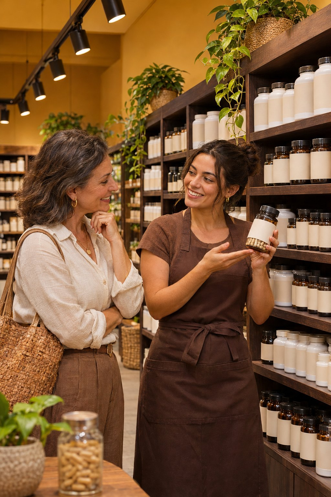
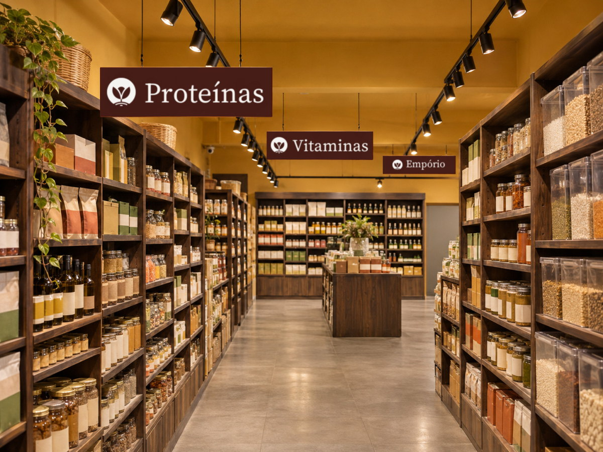
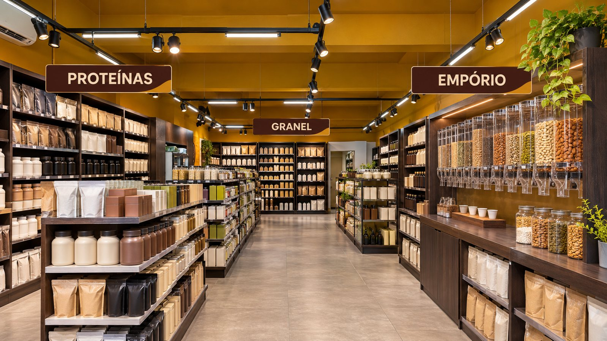

Imagem ilustrativa gerada por inteligência artificial.
Em que ponto estamos
A estratégia está desenhada, revisada com a rede e pronta para decidir
23/10Diagnóstico entregue
29/10A rede pede o empório junto com o planograma
05/11Estratégia, book, manual e planogramas
16/11Devolutiva da rede, respondida na versão 2
HojeDiretoria decide o rumo
30/11Teste de Natal em Pinheiros
18/12Planograma entregue
18/01Piloto começa em Pinheiros
Já está pronto
Posição e três motivos para entrar na loja
22 mil produtos classificados pela árvore de 16 setores da rede
Planogramas P, M e G e os 12 tipos de loja
Lista de execução para cada loja, sem obra
Calendário 2027 pela tabela oficial da rede
O que a devolutiva mudou
Kids e Peso em setores separados
Kombucha fora dos chás; barras com área própria
Vivea na altura dos olhos
Produto regional fora do núcleo nacional
Chocolate e azeite com o dado certo
O que falta
As decisões de hoje
Validar as áreas propostas: barras e snacks, geladeira
Cupons e custo por produto, para medir margem
Fonte: cronograma do projeto; devolutiva da rede de 16/11/2026, com 45 pontos, todos tratados na versão 2. Datas seguintes dependem das decisões de hoje.
O desafio
Como incorporar o conceito de empório à Divina Terra?
“Não faz sentido fazer todo um desenho agora, rolar para a rede inteira e janeiro aparecer com o gourmet formatado.”Francine Tolotti, Divina Terra, 29/10/2026
A rede pediu
Reposicionar sem descaracterizar
Retomar a força do granel
Saber por onde começar no empório
Manter o planograma em dezembro
Fonte: reunião de alinhamento de 29/10/2026.
Por que agora
Metade do caixa depende de um motor só
R$ 50Suplemento
R$ 22Granel
R$ 21Despensa e outros
R$ 7Gourmet
Cada R$ 100 no caixa da rede
+124%cresceu o whey no varejo alimentar em 2025
+105%subiu o insumo do whey em um ano
8 em 100compram suplemento em loja especializada
Fonte: relatório de vendas, 11/2025 a 09/2026. Das 80 lojas do ranking da rede, 69 têm venda nessa base e 11 ainda não; outras 2 lojas com venda ficam fora do ranking, somando 71 analisadas. Scanntech; StoneX; IFEPEC/Febrafar, declaração de compra.
Uma marca, três prioridades: o que muda em cada região
Sul
49 lojas
482626
Sudeste
11 lojas
591031
Norte, Nordeste e Centro-Oeste
11 lojas
521731
A prioridade
Proteger e somar
Abrir o segundo motor
Testar com cautela
No granel
Já é motor: manter a parede cheia
Trazer para a vista da porta
Organizar antes de ampliar
No empório
Aumenta a cesta, sem tirar espaço do granel
2 a 3 módulos, onde há público
É novidade: começar pequeno e olhar a logística
SuplementoGranelDespensa, Gourmet e outrosBarra: parte de cada R$ 100 vendidos na região
Fonte: relatório de vendas, 11/2025 a 09/2026, lojas com venda na base. Prioridades: proposta da 75 LAB.
Nossa resposta
O empório para quemquer se cuidar.
A saúde continua sendo a porta de entrada.
O prazer de comer bem vira mais um motivo para voltar.
A marca não muda. The Healthy Place segue valendo.
Fonte: Posicionamento de Marca, p. 23 e 24. Frase de trabalho, sujeita a aprovação.
A estratégia competitiva
Uma posição que ninguém ocupa
FarmáciaSupermercado premiumInternetDivina Terra hojeDivina Terra em 2028
Contra a farmáciaEla ganha em conveniência e está em toda esquina. Perde em explicação, e é ali que a rede é forte.
Contra o supermercado premiumTem variedade e prazer, mas ninguém explica o ômega 3. É o concorrente mais perto da posição.
Contra a internetGanha em preço e variedade. Perde em tudo o que precisa de gente: conversa, prova e presente pronto.
LeituraA rede não precisa virar a mais barata nem a maior. Sobe em curadoria de prazer e em experiência na loja, e mantém o que já é dela.
Fonte: Kim e Mauborgne, A Estratégia do Oceano Azul, 2005; Posicionamento de Marca, p. 17; reunião de 29/10/2026. Notas de 1 a 5: leitura qualitativa da 75 LAB, não medição, para validar com a rede e com clientes.
Uma loja com três motivos para entrar

Cuidar
Preciso de ajuda para escolher o que tomar.
Suplemento com a conversa que ninguém mais oferece.
A cada 30 a 40 dias
Abastecer
Vou repor o de casa.
Granel, barrinhas, cafés e chás: a compra de rotina.
Toda semana
Celebrar
Vou receber, cozinhar, dar um presente.
Azeite, massa, chocolate e vinho, com curadoria.
Em cada ocasião
Fonte: reunião de 29/10/2026, para a frequência. Imagens ilustrativas geradas por inteligência artificial.
Por que este caminho
Cinco razões, com base na rede, no mercado e na teoria
1
Bem-estar e prazer cabem na mesma cesta
3 motivos
em uma visita: cuidar, abastecer e celebrar. A mesma cliente que vem pelo suplemento quer sabor, origem e ocasião.
2
O mercado abre portas para quem tem curadoria
+10%
no preço do vinho premium, enquanto o de entrada caiu 3%. No azeite, a fiscalização cresceu: procedência vira motivo de compra.
3
Vender mais para quem já entra é o caminho mais curto
+100 mil
clientes por mês já entram nas lojas. Produto novo para cliente de hoje é o crescimento de menor risco.
4
Preço todos têm. A conversa e a curadoria, não
8 em 100
compram suplemento em loja especializada. A rede vence na mentoria e na curadoria, que já são pilares da marca.
5
Uma loja da rede mostra o caminho
11,9%
da venda de Vila Madalena é Gourmet, contra 6,5% na rede. É caso, não molde: o que vai para a rede é o método.
Fonte: reunião de 29/10/2026; Bloomberg Línea, 12/03/2026; Apas/Fipe, 19/08/2026; Apresentação Institucional; IFEPEC/Febrafar, declaração de compra; relatório de vendas 10/2025 a 10/2026, setor Gourmet da classificação v2; Silverstein e Fiske, 2003; Ansoff, 1957; Porter, 1980; Rogers, 1962.
11,9%
da venda de Vila Madalena é Gourmet. Em 64 m², com Warabu e Amarelo Café.
Vila Madalena mostra o caminho, mas não é molde
6,5%Média da rede
11,9%Vila Madalena
Gourmet como parte da venda da loja. Vai para a rede o método; o café e o consumo na hora ficam na loja.
Fonte: relatório de vendas, 10/2025 a 10/2026, setor Gourmet da classificação v2 (árvore de setores da rede). A loja é a 45ª em venda entre 71: o percentual é sinal de caminho, não meta de receita.
Experiência em loja
A cliente sente a mudança antes de ler qualquer preço

Ver
Da porta, ela sabe onde está cada setor: uma gôndola por setor e placa que se lê a 8 m.
Provar
Potinho de prova no granel e degustação no Gourmet. A compra começa pequena e vira hábito.
Conversar
A mentora explica o que serve para quê, com roteiro e sem alegação de saúde.
Levar
Presente pronto, cesta por faixa de preço e o que repor na semana seguinte.
O que não mudaOrganização visualCirculação fácilSetores clarosVariedadeCuradoriaEquilíbrio entre suplemento, granel e Gourmet
Imagens ilustrativas geradas por inteligência artificial. Princípios de experiência: devolutiva da rede de 16/11/2026, item 4.7; Underhill, Why We Buy, 1999.
Ela entra pelo ômega e sai com mais do que veio buscar
1
Encontra
Lê a placa da porta
2
Conversa
Entende qual é o dela
3
Prova
Experimenta uma castanha
4
Descobre
Para na mesa do mês
5
Volta
Repõe na semana seguinte
Cena ilustrativa do resultado pretendido. Imagens geradas por inteligência artificial.
A solução na loja
A cliente atravessa os três motivos em uma só visita
1
Cuidar no fundoQuem vem buscar, vai até lá.
2
Abastecer no caminhoA parede de granel se vê da porta.
3
Celebrar no centroA mesa do mês para quem passa.
123
Imagem ilustrativa de uma loja de 50 a 80 m², gerada por inteligência artificial. Disposição a validar com a planta de cada loja. Clique na imagem para ampliar.
Em Pinheiros, sem obra: mesmos móveis, outra história
Hoje
A proposta

Parede de suplementos organizada por setor, não por marca
Farinhas viram Gourmet: 3 módulos ao lado da mesa
O vão central vira mesa do mês, onde as pessoas já param
Fonte: visita a Pinheiros, 14/10/2026 (foto). Simulação ilustrativa gerada por inteligência artificial, sem marcas reais. Ainda não é o projeto executivo. Clique nas imagens para ampliar.
Mini trade book
O trade da Divina Terra em uma página
1
Posição
O empório para quem quer se cuidar. Três motivos para entrar: Cuidar, Abastecer e Celebrar.
2
Setores
Os 16 setores da rede, um por gôndola, cada um com seu papel: destino, rotina ou sazonal. Barras e snacks e geladeira, a validar.
3
Sortimento
Núcleo de essenciais, igual em toda loja. Lista aprovada de complementares. Local para o regional. Entra um, sai um.
4
Prateleira
Uma subcategoria por prateleira. Nos olhos, o que gira e o que se compra por impulso, com a Vivea. Pesado embaixo.
5
Loja
Porta respira. Destino no fundo, rotina no caminho, Gourmet e mesa do mês onde couber. Pequeno formato no checkout.
6
Comunicação
Placa de setor a 8 m, testeira, faixa de subcategoria e régua “para que serve”. Nenhuma peça cita doença.
7
Preço
Preço de referência nos itens que a cliente compara. Valor no resto, com faixa sugerida por produto.
8
Medida
Gourmet e granel na venda, itens por cupom, ruptura dos essenciais e auditoria de 85%. Essencial nunca falta.
Resumo do book e do manual da estratégia, versão 2. Setores e papéis: material Setores e Categorias da rede. Sortimento: essencial é curva A e vendido em mais da metade das lojas.
Calendário promocional
2027 em uma página: as datas da rede e onde pôr força
Jan
Verão e volta à rotina01/01 CampanhaAno novo, rotina nova01/01 ConteúdoVolta às aulas20/01 Conteúdo
PontaRotina nova
Fev
Carnaval06/02 CampanhaValentine's Day14/02 Apoio ao trade
PontaHidratação e energia
Mar
Dia Internacional da Mulher08/03 CampanhaDia do Consumidor15/03 CampanhaPáscoa28/03 Campanha
PontaDia do Consumidor, de 12 a 15/03
Abr
Sem campanha da rede: mês de execução
PontaRotina de outono
Mai
Aniversário de 16 anos da Divina Terra06/05 CampanhaDia das Mães09/05 Campanha
Ponta16 anos da Divina Terra
Jun
Dia dos Namorados12/06 Apoio ao tradeInício do inverno21/06 Apoio ao tradeFesta Junina24/06 Conteúdo
PontaInverno
Jul
Férias de julho e volta às aulas01/07 Apoio ao trade
PontaLancheira
Ago
Dia dos Pais08/08 CampanhaDia do Nutricionista31/08 Campanha
PontaPresente para o pai
Set
Dia do Cliente15/09 CampanhaSetembro Amarelo01/09 Conteúdo
PontaSemana do Cliente
Out
Dia das Crianças12/10 CampanhaOutubro Rosa01/10 ConteúdoDia do Professor15/10 Em aberto
PontaDia das Crianças
Nov
Black Friday26/11 CampanhaNovembro Azul01/11 Conteúdo
PontaBlack Friday
Dez
Natal25/12 CampanhaRéveillon31/12 CampanhaFinal de ano e férias01/12 Em aberto
PontaNatal
Campanhas com plano próprio15/03 Dia do Consumidor: combos de rotina e progressivo no granel06/05 16 anos: Vivea e 16 líderes com 16%, emendando com Mães15/09 Dia do Cliente: preço de cliente e oferta de granel26/11 Black Friday: esquenta, combos e verba negociada com as marcas
Fonte: tabela oficial de 2027 da rede (devolutiva de 16/11/2026). Mecânicas, descontos e verbas: proposta da 75 LAB, a validar com o comercial e com as marcas. Datas de conscientização entram só como conteúdo.
Pode valer de R$ 0,9 mi a R$ 8,8 mi por ano: o piloto diz onde ficamos
Dado real
O que a base mostra hoje
R$ 77,5 mi por ano, nas 71 lojas
6,5% de Gourmet
21,8% de granel
Hipótese
O que ainda precisa ser provado
Quanto é venda nova e quanto só muda de categoria
A margem, que depende do custo por produto
Meta de trabalho
Onde queremos chegar em 2028
10% de Gourmet
26% de granel
Simulação de venda a mais por ano
+R$ 0,9 miCauteloso: Gourmet 8%, granel 24%, 30% de venda nova
+R$ 3,6 miBase: Gourmet 10%, granel 26%, 50% de venda nova
+R$ 8,8 miAmbicioso: Gourmet 12%, granel 28%, 70% de venda nova
Fonte: relatório de vendas, 11/2025 a 09/2026, anualizado; cálculo da 75 LAB, em que a venda que não é nova sai de suplemento e despensa. Não considera as 11 lojas sem venda na base, efeito de preço nem margem. Simulação, sem garantia de resultado.
O piloto: uma loja, doze semanas, duas decisões
PinheirosLoja do piloto
Semanas 1 a 6Loja organizada: setores, placas, preço e 20 tubos de granel18/01 a 28/02/2027
Semanas 7 a 12Soma o empório: 3 módulos e a mesa do mês01/03 a 11/04/2027
MoinhosLoja de comparação
Sem nenhuma mudança: mostra o que aconteceria de qualquer forma
Na semana 6, sabemosQuanto rende organizar a loja
Na semana 12, sabemosQuanto o empório soma, e quanto é venda nova
Se a rede quiser ampliarAlphaville pode ser a segunda loja. Hoje, o escopo contempla uma
Fonte: proposta da 75 LAB; relatório de vendas, 11 meses (venda mensal de Pinheiros e Moinhos com correlação de 0,82). Uma loja mostra direção, não certeza estatística: a onda seguinte repete a medida em outras lojas. Vinho e queijo entram só com validação.
O compromisso de dezembro segue de pé, e a rede inteira começa em julho
DecisõesPosição, piloto, comitê e gôndola padrão
Natal em testePonta e mesa em Pinheiros
Planograma entregueJá com o empório
Piloto começaPinheiros e Moinhos
A rede decideSegue, ajusta ou para
9 lojasUma de cada tipo, com Alphaville
Demais lojas10 a 15 por mês, com a rede
PrepararPilotoExpandir, só se o piloto passar
Fonte: proposta da 75 LAB; reunião de 29/10/2026. Depende de aprovações em até 3 dias úteis por etapa e dos dados de cupom e custo por produto. Cada onda só anda se a anterior passar.
A oportunidade já está dentro da loja. Falta decidir.
A oportunidade
Mais de 100 mil clientes por mês, e um Gourmet que já faz 11,9% em uma loja de 64 m²
O ganho esperado
Mais motivos para voltar
Venda menos presa a um motor
Um padrão que qualquer loja segue
Cerca de R$ 3,6 mi por ano, no cenário base simulado
As decisões de hoje
“O empório para quem quer se cuidar” é o rumo?
Piloto em Pinheiros?
Testamos no Natal?
Quem forma o comitê da rede?
Qual é a gôndola padrão?
O jurídico avalia o vinho até 20/11?
Simulação, sem garantia de resultado. Para medir margem e frequência no piloto, a rede precisa enviar cupons e custo por produto.
 ×
×


 123
123